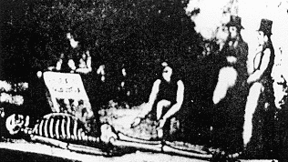
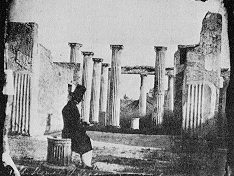
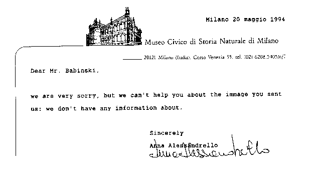
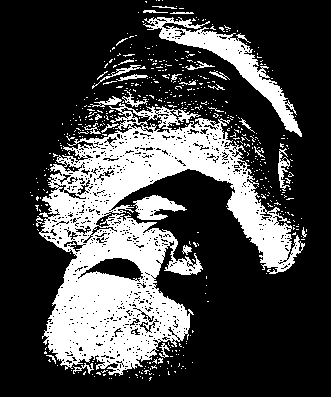
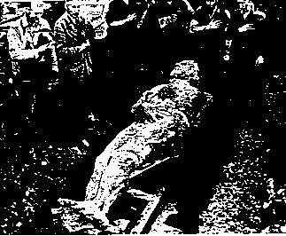
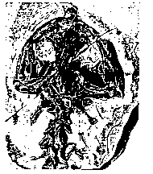
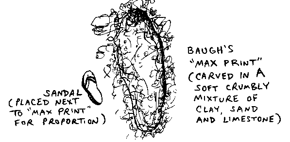

Kretinismus oder Evilution? Nein. 3
Herausgegeben von E.T. Babinski
Männer über zehn Fuß groß

|
Zurück |
Inhalt |
Weiter |
Männer über zehn Fuß groß?
Ich erwähne all das oben, weil ich einige der „großen Geschichten" von Carl Baugh besprechen möchte, die von „Kreationsevangelisten" wie Kent Hovind und anderen verbreitet werden. Darunter ist ein Bild irgendeiner Art, vielleicht eine künstlerische Darstellung (Baugh nennt es ein „Fotograf"), wie sie in Baughs Buch Dinosaur (Promise Publishing, 1987) zu sehen ist.
Sowohl Baugh als auch Hovind zeigen stolz eine Dias-Reproduktion dieses Bildes in ihren „Kreationismus"-Vorträgen. Leider sagt Baugh in seinem Buch nicht, woher das Bild stammt, oder gibt weitere Details dazu an, außer der Bildunterschrift, die in seinem Buch darunter steht: „Ein Bergmann fiel durch ein Loch in einem Bergwerk in Italien und fand dieses 11' 6" Skelett." Kent Hovind fügt während seiner Vorträge sogar ein Datum hinzu („1856", wenn ich mich richtig erinnere) für diese „Entdeckung", obwohl in Baughs Buch kein spezifisches Datum erwähnt wird.

Natürlich waren die Gedanken, die mir durch den Kopf gingen, als ich dieses „Foto" zum ersten Mal sah...
1) Wenn dies ein „Foto" einer echten Entdeckung ist, dann ist das Skelett auf diesem Foto das des höchsten Menschen in der Geschichte! Nach dem Guinness-Buch der Rekorde war der weltweit höchste bekannte Mensch Robert Wadlow, der „Alton-Riese", der nur 8 Fuß 11 Zoll groß war und an einer septischen Infektion starb, die durch das Reiben seines Knöchelbrackets gegen seinen rechten Knöchel verursacht wurde. Wadlow war so groß, dass er Knöchelbrackets tragen musste, um sich zu stützen! Baughs „Foto" zeigt einen Menschen, der mehr als zwei Fuß und elf Zoll höher ist als der höchste Mensch in der Geschichte! Warum hat niemand sonst, wie die Leute, die die Rekordbücher veröffentlichen, von dieser bemerkenswerten Entdeckung gehört?
2) Woher stammt dieses „Foto"? In welchem Buch, Journal oder Zeitungsartikel erschien es erstmals? In welchem Bergwerk wurde dieser Skelett gefunden? In welcher Stadt in Italien und in welchem Jahr? Und von wem? (Keine dieser Fragen wurde je von Baugh beantwortet, weder in seinem Buch noch in zwei späteren Telefonaten, die ich mit ihm hatte.)
|
Als Antwort auf das obige Foto habe ich kürzlich folgenden Brief erhalten,
den ich für die Leser interessant finden würde:
Herr Babinski: |
3) Wie kann man sicher sein, dass dies ein .Fotografie" ist und nicht ein Künstlerdruck oder eine Schöpfung, vielleicht für einen fiktiven Roman oder eine Kurzgeschichte geschrieben von einem der frühen Imitatoren Jules Vernes, oder basierend, vielleicht auf übertriebenen Geschichten von „Atlantis" oder anderen Erzählungen, die damals beliebt sein könnten? Es ist bekannt, dass während des 19. Jahrhunderts riesige fossile Kreaturen wie Dinosaurier die öffentliche Aufmerksamkeit auf sich zogen, da sie zum ersten Mal ausgegraben wurden und Bilder davon in Zeitungen ganz Europas der Öffentlichkeit präsentiert wurden, und die Menschen mussten spekulieren, ob Menschen in der Vergangenheit nicht größer gewesen sein könnten. Daher könnte dies ein Künstlerdruck oder eine Schöpfung sein, inspiriert von nichts weiter als der imaginativen Spekulation der Menschen im 19. Jahrhundert über riesige Tierarten.
Diese Vorstellung, dass das Bild eine „imaginative Spekulation" sei, die für eine Zeitung, einen Roman oder eine Kurzgeschichte jener Zeit erstellt wurde, ist eine Interpretation, der sich Baugh stellen muss, insbesondere da er nichts hat, um seine Geschichte zu untermauern, außer einem Bild, dessen Herkunft ebenso unklar ist wie das Bild selbst und das daher zweifelhaft ist, es als „Fotografie" einer echten Entdeckung überhaupt zu zitieren.
Auch andere Fragen kommen sofort in den Sinn:
4) Wer hat bestimmt, dass das Skelett genau 11 Fuß 6 Zoll maß? Aus dem Bild allein lässt sich die genaue Größe des Skeletts nicht erkennen, ganz zu schweigen von der "Zollgenauigkeit." 5) Woher stammt die Geschichte vom Bergmann, der "in ein Loch fiel"? 6) Was ist die Natur des rechteckigen "Zeichens" mit den undeutlichen "Buchstaben" neben dem Skelett? 7) Offensichtlich, wenn es sich um ein "Foto" handelte, konnte es nicht tief in einem Bergwerk aufgenommen worden sein, denn selbst mit einem Dutzend Bergmannslampen des 18. Jahrhunderts wäre nicht viel Licht vorhanden gewesen, und es ist unwahrscheinlich, dass jemand ein Lagerfeuer tief in einem Bergwerk entfacht hätte, um dort ein solches Foto aufzunehmen, da es wahrscheinlich nicht genug Luft geben würde, um ein Lagerfeuer für längere Zeit in einem Bergwerk aufrechtzuerhalten. Wenn es sich um ein "Foto" handelt, das in einem Bergwerk aufgenommen wurde, zeigt es bemerkenswerterweise alle Knochen des Skeletts von Kopf bis Fuß vollständig ausgegraben, weiß gereinigt, vollständig miteinander verbunden und gut beleuchtet, zusammen mit großen Teilen des Vordergrundes und des Hintergrunds, die hell erscheinen. Es scheint auch unwahrscheinlich, dass Männer in einem Bergwerk in voller Abendjacke mit weißen Hosen und großen Zylinderhüten abgestiegen wären. 8) Aber wenn dies, sagen wir, ein "Foto" ist, das über dem Boden und im Freien aufgenommen wurde, warum nicht auf Tageslicht warten und ein gutes Bild mit feiner Linienklarheit machen, anstatt dieses undeutliche Bild? Selbst die frühesten aufgeführten Fotografien zeigten mehr Klarheit und waren deutlicher als dieses angebliche "Foto". Ich füge einige Beispiele in einem separaten Abschnitt unten ein. 9) Wenn ein solches Skelett tatsächlich im Gestein gefunden worden wäre, dann wären die Knochen, nachdem sie ausgegraben wurden, getrennt voneinander geworden und die Form eines zufälligen Knochenhaufens angenommen, im Gegensatz zum Bild, das zeigt, dass sogar die Finger, Zehen und das Kieferknochen miteinander verbunden sind. Und wenn die Ausgräber die Knochen verpackt und aus dem Bergwerk gezogen haben, sie gründlich gereinigt haben, damit sie so hell und klar aussehen wie im "Foto", und sie dann mit Draht und Kleber zusammengefügt haben, um wie perfekt platzierte Knochen eines menschlichen Skeletts auszusehen, warum dann all diese Mühe aufwenden und kein besseres "Foto" machen? Oder zumindest, wenn man all diese Mühe aufwenden will, mehr Beweise für eine derart außergewöhnliche Entdeckung hinterlassen als nur ein undeutliches Foto? 10) Und wie groß müssen die Chancen sein, ein ganzes Skelett wie das zu finden, sogar mit Finger- und Zehenknochen, jeder Rippe, sogar dem Kiefer, allesamt in derselben Ablagerung? Die Chancen, ein derart perfekt vollständiges Skelett zu finden, sind gering, es sei denn, es handelte sich um eine spätere intrusive Bestattung eines ganzen Individuums durch seine Freunde. Ah, aber dann war dieses Skelett nicht "durch die Sintflut begraben!"
Habe ich mit seinem undeutlichen „Foto" (ursprünglich in einem Gott-weiß-was-Neuigkeiten oder Buch veröffentlicht) meine Neugier geweckt, rief ich Carl Baugh an, den Autor des Buches, in dem das Bild erschien. Er sagte, er habe das Bild von einem anderen Kreationisten, Clifford Burdick, erhalten. Eines Tages besuchte Baugh Burdicks Zuhause und Burdick sagte zu Baugh: „Wollen Sie das?" (gemeint war das fragliche Bild) und fügte die kleine Geschichte hinzu, dass es sich um ein Skelett handele, das in einem Bergwerk in Italien im „19. Jahrhundert", d.h. im 19. Jahrhundert, gefunden worden sei. Offensichtlich wurde von Burdick, der kurz nach der Übergabe des Bildes an Baugh verstarb, keine weitere Überprüfung angefordert oder hinzugefügt. So beginnt und endet die Geschichte mit Burdick und mit dem, was Baugh sagt, Burdick gesagt zu haben, was in Bezug auf Bestätigung kaum etwas ist.
Clifford Burdick hat natürlich einmal für "The Discovery of Human Skeletons in Cretaceous Formation" (Creation Research Society Quarterly, Vol. 10, Sept. 1973) argumentiert, oder, wie die Skelette umgangssprachlich genannt wurden, "Moab Man". Menschliche Skelette, die in Gestein aus der Kreidezeit gefunden wurden? Gemäß der geologischen Zeitskala tauchten selbst die frühesten menschenähnlichen Vorfahren der Menschheit erst lange nach der Kreidezeit auf. Dennoch entwickelte sich dieser Fall zu einem weiteren Beispiel, in dem Kreationisten aufgrund der von Mainstream-Wissenschaftlern vorgebrachten Beweise zurückzutreten hatten. Zum Beispiel untersuchte ein Professor für Anthropologie die "Moab Man"-Skelette so schnell wie möglich nach ihrer ersten Entdeckung (als einige Erde mit einem Bagger bearbeitet wurde). Der Professor stimmte zu, dass es sich tatsächlich um menschliche Skelette handelte, aber dass es sich lediglich um indische Skelette handelte, die in einer Felsklippe begraben worden waren; das umgebende Gestein datiert auf die Kreidezeit, nicht jedoch die begrabenen Skelette, die lediglich zwischen die Felsen geschoben und später mit Sand usw. bedeckt worden waren.
In zwei Briefen, die ich besitze und die am 13. November 1973 und im Juni 1976 datiert sind, schrieb John P. Marwitt (der Anthropologe, der vor Ort war, als die Skelette ursprünglich durch Bulldozer freigelegt wurden): „Ich habe mich besonders bemüht, allen Beteiligten, einschließlich der 'Creation Research Society', deutlich zu machen, dass die menschlichen Überreste in keiner Hinsicht als zeitgleich mit den [Kreidezeitlichen] Sandsteinschichten [die sie umgeben] betrachtet werden können. Im Bereich der Bestattungen gab es konsolidierten [Kreidezeitlichen] Sandstein auf derselben Höhe. Die beerdigten [menschlichen Skelette] waren jedoch von lockerem Blowsand und verwittertem Sandsteinbruch umgeben und bedeckt, nicht von konsolidiertem oder halbkonsolidiertem [Kreidezeitlichen] Gestein. Ich erklärte allen Anwesenden, dass die Bestattungen offensichtlich in einer Riss/Spalte im Gestein platziert und mit Blowsand und Abbröckelungen des Sandsteins bedeckt wurden, die durch Verwitterung verursacht wurden. Die Platzierung von Bestattungen in Spalten und Nischen war sowohl prähistorisch als auch historisch im Südwesten häufig üblich. [Kurz gesagt] gehörten die [menschlichen Skelette] nicht zum [Kreidezeitlichen] Sandsteinformation und wurden nicht in einem Gesteinsmatrix gefunden, wie von Burdick impliziert. Die Knochen selbst waren nicht versteinert, und es gab keine Ersetzung von Kalk im Knochen durch Mineralisierung. Sie waren weich, bröckelig und teilweise verrottet – kurz gesagt, von eher neuem Ursprung, wahrscheinlich historisch Paiute oder Ute, oder möglicherweise von euro-amerikanischer Herkunft, da keine zugehörigen Artefakte gefunden wurden." Später wurde ein Femur eines der Skelette auf etwa 210 Jahre +/- 70 Jahre radiometrisch datiert. Auch einige andere solche Skelette wurden gefunden – dieselbe Geschichte gilt, wie oben dargelegt.
So ist Burdick, der bezüglich „Moab Man" als „Beweis gegen die moderne Geologie" unrecht lag, nicht gerade eine Quelle der Wahrheit. Dennoch habe ich nach meinem Telefonat mit Baugh jeden Artikel durchgesehen, den Clifford Burdick in der Creation Research Society Quarterly veröffentlicht hat, um nach genauen Informationen über den Ursprung des Bildes des 11 Fuß 6 Zoll großen menschlichen Skeletts zu suchen, das „in einem Bergwerk in Italien gefunden" worden sein soll. Und ich habe nichts gefunden. Nicht ein Wort von Clifford Burdick bezüglich dieses rekordbrechenden menschlichen Riesenskeletts!
Es genügt zu sagen, dass Clifford Burdick zwar dafür bekannt war, falsche Behauptungen über „fossile Menschen, die der evolutionären Theorie widersprachen", zu verbreiten, ich konnte jedoch in keinem der von mir bei Bob Jones konsultierten Bücher von Burdick und in keinem der Artikel von Burdick im Creation Research Society Quarterly, die ich sorgfältig, Heft für Heft, überprüfte, eine Erwähnung des rekordbrechenden 11' 6" Skeletts finden. Daher hielt Burdick selbst das Bild dieses rekordbrechenden Skeletts nicht für wichtig genug, um es in irgendeiner Form zu verbreiten (vielleicht wurde es einfach per Post von einem anderen Kreationisten an Burdick geschickt, der das Originalfoto oder die Künstlerdarstellung fotografiert hatte, es als seltsam empfindend, aber ohne wirklich seine Quelle oder seine Bedeutung zu erkennen). Daher fand auch Burdick, dass es nicht wert war, ein solches undeutliches Bild von unbekannter Herkunft zu verbreiten. Burdick übergab es Baugh als Bagatelle und sagte: „Möchtest du das?" Doch Baugh und Hovind haben dieses Bild als eine wahre und wissenschaftlich verifizierte Entdeckung ausgegeben! Sie bringen dieses Bild in ihren Debatten mit Mainstream- Wissenschaftlern vor und sagen: „Erklärt das!" Doch Baugh und Hovind müssen es zuerst erklären! Scheint es nicht seltsam für Baugh oder Hovind, dass sie beide noch voreiliger handeln als Burdick, der das Bild (siehe unten) in seinen kreationistischen Veröffentlichungen nicht einmal diskutiert hat?
Ich möchte noch hinzufügen, dass die Arme des Mannes, der auf das Skelett zeigt (in Baughs angeblichem „Fotograf"), abnorm lang erscheinen.
Vergleichen Sie die untenstehenden Fotos, die in Italien in derselben Zeitperiode aufgenommen wurden. Beachten Sie die feine Linienklarheit solcher Fotos in den 1850er Jahren, selbst bei der Aufnahme von Objekten in schattigem Licht! Sicherlich hätte jeder, der sich die Zeit und Mühe genommen, zu graben, zu reinigen, die Knochen wieder anzuschließen (und Herren in feiner Kleidung daneben posieren zu lassen) bei einer derart gewaltigen Entdeckung – mehr Sorgfalt darauf verwendet hätte, ein anständiges „Foto" davon zu machen, angesichts dessen, wie klar und deutlich Fotos selbst in dieser Zeitperiode waren. Selbst das „älteste bekannte Foto", das ich in einem Buch über frühe Fotos veröffentlicht fand, bewahrte mehr feine Linientdetails als Baughs angebliches „Foto!"

Klicken Sie hier für weitere Fotos aus den 1840er Jahren.
Das „Foto" des riesigen menschlichen Skeletts wirft somit mehr Fragen auf, als es beantwortet. Doch diese „große Geschichte" endet hier nicht! Vergleichen Sie die Geschichte hinter dem „Freiburger Schädel", dem „menschlichen Schädel" aus Kohle, der Kohle aus der Zeit des Karbon, lange bevor Menschen je auf der Erde erschienen sind. Diese Funde wurden von Henry Morris in „The Genesis Flood" als das Todesurteil für die moderne (alte-Erde-)Geologie bezeichnet. Der „Freiburger Schädel" wurde etwa zur gleichen Zeit entdeckt, zu der Baughs „riesiges menschliches Skelett" angeblich „fotografiert" wurde, doch dieser „Schädel" wurde später als eine Fälschung enthüllt, die aus Stücken weicher brauner Kohle geformt wurde, um oberflächlich einem menschlichen Schädel zu ähneln, ohne echte skelettale Merkmale; der Betrug wurde durchgeführt, um den Glauben an die biblische Sintflut zu fördern. Jung-Erde-Kreationisten gaben schließlich den Geist des Arguments für die Echtheit des „Freiburger Schädels" auf. Zwei Artikel in der Creation Research Society Quarterly gaben zu, dass die ursprünglichen Berichte wahr waren, nämlich dass der Schädel nichts anderes als eine Fälschung war (siehe: Dr. Wayne Frair, „The Human Skull Composed of Coal," CRSQ, v. 5, März 1969; und: Dr. Wayne Frair, „Additional Information on the Freiberg Human Skull Composed of Coal," CRSQ, v. 20, Juni 1993). Doch Baugh hält an seinem undeutlichen Bild fest, das er ein „Foto" nennt, ein Foto, das aus derselben Zeitperiode stammt wie der „Freiburger Schädel"-Betrug!
Aber zurück zu Baughs Darstellung des riesigen menschlichen Skeletts. Die Geschichte wird immer merkwürdiger. Nicht zufrieden mit Baughs Unwissenheit bezüglich des Ursprungs des Bildes, unternahm ich selbst die Suche nach seinem Ursprung, etwas, das Baugh offensichtlich nicht die genuine wissenschaftliche Neigung hat, zu tun. Ich wandte mich an vier der größten Museen für Naturgeschichte in Italien und erhielt eine Antwort von einem der größten, eine Kopie derer erscheint unten:

Meine Suche nach der Wahrheit endete dort nicht. Ich schrieb an einen Forscher, der Hunderte von Büchern von Kreationisten besitzt, Bücher, die sowohl in diesem als auch im vorherigen Jahrhundert veröffentlicht wurden, und fragte ihn, ob diese „Entdeckung" in einem dieser Bücher erwähnt wurde. Das, woran er am nächsten herankam, war ein 1926 veröffentlichtes Buch, The Biblical Story of Creation von Giorgio Bartolli, einem berühmten italienischen Kreationisten. Bartolli erwähnte eine Anzahl von „Fossilien riesiger Kreaturen", aber keine riesigen Menschen, noch eine Erwähnung des Bildes des aufsehenerregenden Skeletts eines riesigen Menschen, das in Baughs Buch gefunden wurde. Dieser italienische Kreationist war auch Professor für Geologie und ehemaliger Direktor eines Bergwerks in Sardinien, Italien. Also zog ich erneut ein Blatt. Eine Kopie dieses Briefes des Forschers erscheint unten:
Liebe Ed:
Ich habe nichts über den 11 Fuß langen menschlichen Skelett gefunden. Giorgio Bartoli ist der italienische Bergwerksdirektor (ein sardisches Bergwerk); sein Buch von 1926 erwähnt es nicht. Dies lässt mich vermuten, dass es keine Beweise gibt, die außerhalb des Bildes liegen, das Baugh in seinem Buch hat (ich habe auch Baughs Buch).
Beste Grüße,
Tom McIver
Also kontaktierte ich William Corliss, denjenigen, der sich mit der Katalogisierung wissenschaftlicher Anomalien befasst, einschließlich der Verfolgung von Berichten über menschliche „Riesen". Und Corliss sagte mir, er habe noch nie von Beweisen für einen Menschen in einer Größe von 11 Fuß 6 Zoll gehört, und fügte hinzu, dass es in diesem Bereich „viele Betrügereien" gäbe, wie den Cardiff Giant (eine 10 Fuß 4,5 Zoll hohe Statue eines Menschen, aus Gips geschnitzt und so ausgestellt, als wäre es ein versteinert gewordener menschlicher Riese, alles getan, um Geld zu verdienen!). Eine Kopie von Corliss' Antwort erscheint unten, zusammen mit Bildern des Cardiff Giant:
Liebe Ed:
Ich bin gerade von einem kurzen Urlaub zurückgekehrt und habe Ihren Brief vorfinden.
Obwohl ich eine Reihe von Berichten über große Skelette gesammelt habe, kommt keiner auch nur in die Nähe des von Ihnen erwähnten 11'6" Skeletts. Sie sollten nach einer Art Referenz aus der wissenschaftlichen Literatur fragen. Viele Betrugsfälle in diesem Bereich.
Mit freundlichen Grüßen,
William R. CorlissP.S. Was meine Zusammenstellung UNKNOWN EARTH betrifft, kann ich nicht sehen, wie sie den Kreationismus unterstützt. Jedenfalls ist es einfach eine Sammlung von Berichten aus der Literatur – primär aus der wissenschaftlichen Literatur. Einige dieser Berichte können die Datierungsmethoden und/oder die behaupteten Altersangaben bestimmter Formationen in Frage stellen.
|
 Der Cardiff Giant im Farmer's Museum, Cooperstown, New York |
Ich rief Carl Baugh zum zweiten Mal an, doch er konnte mir nichts mehr über das Bild des 11' 6" hohen Skeletts sagen. Dann fügte er hinzu, dass das Bild „neben dem Punkt läge, da ein Kollege" Baugh „von einer Titelseite voller Farbbilder in der Denver Post um 1991 erzählt habe, die von einer 10 Fuß hohen Frau in Mosambik berichtete, die einfach eines Tages im Dorf aufgetaucht sei, da dieses Dorf kostenlose Impfungen verteilte." Baugh fügte hinzu, dass diese 10 Fuß hohe Frau nicht an einer Hypophysenunterfunktion litt (was zu Gigantismus sowie Schwäche und Koordinationsstörungen führt), da sie 300 Pfund auf der Bank drücken konnte!
Wow! Was für ein Fund! Eine aktuelle Schlagzeile! Und so viele Details! Vielleicht gibt es Beweise für Menschen, die zehn Fuß oder höher sind! Ich sagte Baugh "Vielen Dank" und machte mich daran, diese neuen Beweise zu finden. Ich rief die Denver Post an und sprach mit der Dame, die seit den letzten fünf oder zehn Jahren für die Titelseite zuständig ist. Und sie erinnerte sich an keine solche Geschichte. Tatsächlich, hätte Guinness nicht von einem solchen Bericht erfahren, wenn er eine Titelseiten-News in einer großen amerikanischen Zeitung gewesen wäre? Ich überprüfte die Ausgabe von 1995 des Guinness-Buchs der Rekorde und fand, dass Robert Wadlow, der "Alton-Riese" (8' 11" groß), immer noch als der höchste Mensch aufgeführt war, der je dokumentiert wurde. Die Dame von der Denver Post gab mir dann die Nummer eines Unternehmens, das sich auf Suchen nach Themen-Titel-Wörtern in großen amerikanischen Zeitungen spezialisiert hat (ohne die Boulevardzeitungen, die Fakten und völlig erfundene Artikel vermischen). Aber nach einer erschöpfenden computergestützten Suche, unter Verwendung aller verfügbaren Schlüsselwörter wie Afrika, Mosambik, Riese, groß, hoch, Frau, Dame, Impfung, Impfung usw., kamen wir auf ein komplettes Nichts!
Ich rief auch die Colorado State University an, die den Denver Post Index besaß, und überprüfte Schlüsselwörter, doch auch hier blieb ich ohne Erfolg. Zudem führte ich eine Suche über die computergestützten Zeitschriften- und Zeitungssuchdienste der Bibliothek der Furman University durch. Alles vergeblich. Am nächsten kam ich einem Artikel über einen afrikanischen Staat in The Economist (Bd. 328, Nr. 7825, 21. August 1993, S. Nl(2)) mit dem Titel „Hat jemand einen Riesen gesehen?". Ich las diesen Artikel. Er erwähnte „Riese, Menschen" nicht. Er befasste sich ausschließlich mit Wirtschaftswachstum. Die Dame von der Denver Post, mit der ich zuvor gesprochen hatte, sagte mir, dass die Geschichte von der „riesigen Frau" eher nach etwas klang, das in einem Supermarkttabloid als in einer Zeitung veröffentlicht worden sei. Zu diesem Zeitpunkt musste ich ihr zustimmen.
|
 Der riesige Betrug wird 1948 auf dem Farmers Museum in Cooperstown, New York, bestattet. Tausende zahlten, um den gefälschten „versteinerten Menschen" zu sehen, der angeblich auf einem Bauernhof in Cardiff aufgepflügt worden war. |
Baugh hatte mir für meine Suche nach diesen Informationen gute Wünsche ausgesprochen und gesagt, er wolle hören, was ich gefunden habe, aber er zeigte kein Interesse daran, selbst zu recherchieren. Offensichtlich wusste er bereits, dass Menschen über zehn Fuß groß eine Tatsache seien. Ich nehme an, er stützt diese „Tatsache" auf die geschnitzten „Fußabdrücke", die er besitzt. Nach meiner erschöpfenden Suche ließ ich Baugh wissen, wie ergebnislos sie gewesen war. Ich warte auf den Tag, an dem weniger scharfsinnige Kreationisten wie Baugh beginnen, ihre eigene Recherche zu jedem einzelnen „großen Märchen" durchzuführen, bevor sie Gerücht auf Gerücht stapeln und alles „wissenschaftliche Beweise" nennen. Diese Menschen verbreiten die naivsten „großen Märchen" und präsentieren die schärfsten „Beweise" vor Hunderten von Kirchengemeinden jedes Jahr, und sie behaupten immer, sie seien „mehr im Recht" als die Evolutionsbiologen, die sie falsch zitieren und missdeuten!
Zusammenfassend mein Fazit: Im 19. Jahrhundert rückten riesige, fossilisierte Kreaturen wie Dinosaurier in den Mittelpunkt der öffentlichen Aufmerksamkeit, da sie zum ersten Mal ausgegraben wurden und Abbildungen dieser Wesen die Zeitungen ganz Europas überfluteten. Die Menschen mussten sich gefragt haben, ob Menschen in der Vergangenheit nicht größer gewesen sein könnten. Daher ist Baughs „Foto" höchstwahrscheinlich ein Künstlerdruck oder eine Schöpfung, die nichts weiter als die imaginativen Spekulationen der Menschen im 19. Jahrhundert über riesige Tierarten inspiriert.
Dass das Bild ursprünglich dazu erstellt wurde, einen fiktiven Zeitungsartikel zu begleiten, oder für einen Roman oder eine Kurzgeschichte jener Zeit, ist eine Interpretation, der sich Baugh stellen muss. Es liegt an Baugh oder anderen Kreationisten, uns genau zu sagen, wo diese „Entdeckung" erstmals öffentlich gemacht wurde, und zu zeigen, dass das Bild, das er anzeigt, tatsächlich ein „Foto" ist. Ein undeutliches Bild unbekannter Herkunft ohne andere Aufzeichnungen, die es stützen, aus dieser Zeitperiode beweist nichts.
Baugh's Begeisterung für die Verbreitung kreationistischer Märchen hat ihn zu einer Art kreationistischen Volkshelden gemacht, da er damit beschäftigt ist, Kalksteintafeln in Texas aufzuheben und dabei große Mengen wissenschaftlich bedeutsamer Dinosaurierfußspuren un katalogisiert verfallen zu lassen, während er sich mühsam durch sie hackt und vergeblich nach Markierungen sucht, die auch nur im entferntesten menschlich wirken könnten, um die er dann eine weitere märchenhafte Interpretation aufbauen kann.
Baugh's große Geschichte erinnert mich an die von Kent Hovind, die ich hörte, wie Kent sie in einer seiner Vorträge wiederholte: "Jemand aus dem Publikum bei einem meiner Kreationismus-Seminare kam zu mir und erzählte, wie sie (oder jemand, den sie kannten) in einem Bergwerk (in West Virginia oder Kentucky) arbeiteten und dort ein 'riesiges menschliches Skelett' im Bergwerk fanden, aber niemand war interessiert genug, die Knochen auszugraben oder weiter zu untersuchen, und das gesamte Gebiet wurde daraufhin unter Wasser gesetzt, weil sie in dieser Region einen Staudamm bauten." Wenn Kent glaubt, dass diese Geschichte wahr ist, warum nehmen dann einige "Kreationisten-Wissenschaftler" nicht die Namen der Personen, die diese Geschichte erzählen, und versuchen, diese Nachricht bis zu ihren Quellen zurückzuverfolgen? Warum nicht in diese Stadt oder das umliegende Gebiet reisen und viele Leute befragen, bis man die mit übereinstimmenden Geschichten findet, oder eine Anzeige in der lokalen Zeitung oder im lokalen Radio schalten, die nach Informationen zur Geschichte fragt? Wenn das zutrifft, dann holen Sie sich eine Karte des Bergwerks und, wenn es nicht zu sehr mit Schlamm gefüllt ist, graben Sie eine Öffnung zum Schacht aus und senden Sie eines dieser Schwimmroboter mit einer Lampe und einer Kamera an einem Ende und mit mechanischen Klauen, um etwas zurückzubringen, nur ein Stück Knochen, um die Geschichte zu überprüfen. Warum? Weil dies das erste, bestätigte Beweismaterial für riesige menschliche Wesen liefern könnte, die "durch die Sintflut begraben" wurden. Wenn eine solche Geschichte wahr wäre, hätten "Kreationisten-Wissenschaftler" harte skelettale Beweise. Stattdessen verfolgen Kreationisten wie Baugh und Hovind die Ursprünge der "größten Geschichten", die sie hören, nicht angemessen, selbst wenn sie angeblich "Daten, Orte und menschliche Kontaktpersonen" haben, mit denen sie ihre Suche beginnen können. Sie nehmen sich lediglich die Freude, solche Geschichten zu verbreiten ... im Namen des "Herrn der Wahrheit".
Kent Hovinds Gerüchte über die Entdeckung von „riesigen menschlichen Skeletten" in einem Bergwerk in West Virginia erinnern mich an eine ähnliche Behauptung, die vor über hundert Jahren von einem Kreationisten aufgestellt wurde, nämlich dass sie einen fossilen menschlichen Schädel und einen Teil der Wirbelsäule einer Person gefunden hätten, die im biblischen Flutereignis ertrunken sei, und in deren augenlosen Höhlern noch der Schrecken dieses alleszerstörerischen Deluges zu sehen gewesen sei. Der Kreationist, der das Fossil gefunden hatte, nannte es Homo diluvii testis [„Homo" bedeutet „Mensch" und „diluvii" bedeutet „Deluge"]. Cuvier, der französische Wissenschaftler, untersuchte das Homo diluvii testis-Fossil genauer, putzte den überschüssigen Gesteins- und Erdreichbelag vom Fossil und siehe da, es stellte sich heraus, dass es überhaupt nicht menschlich war, sondern der Schädel und ein Teil der Wirbelsäule eines großen Salamanders aus einem oligozänen Seegrund. (Siehe Bild unten.)
|
 Homo diluvii testis. Schädel und Teil des Rückgrats eines großen Salamanders aus den oligozänen Seesedimenten bei Oeningen, Schweiz, die von Scheuchzer fälschlicherweise für die Überreste eines Menschen gehalten wurden, der während der biblischen Flut ertrunken sei. |
Wenn man von der Art spricht, wie ein falsch identifiziertes Fossil eine "große Geschichte" erzeugen kann, haben einige Historiker vorgeschlagen, dass die Geschichte vom einäugigen Riesen, dem "Zyklopen" der antiken griechischen Erzähler, möglicherweise von jemandem abstammt, der auf das Schädel eines ausgestorbenen Mamuts gestoßen ist. Die große Öffnung in der Mitte der "Stirn" des riesigen Mamutschädels wäre wie ein "Augenhöhlen eines einäugigen Menschen von gigantischen Ausmaßen" erschienen (besonders da Mamuts vor dem Aufstieg der griechischen Zivilisation vor Tausenden von Jahren ausgestorben waren). Doch in Wirklichkeit befand sich die Öffnung dort, wo der Rüssel angesetzt war, d. h. die Nasenpassage des Mamuts.
Ich würde mich schuldig machen, wenn ich nicht einige andere "große Geschichten" erwähnen würde, die von Carl Baugh verbreitet wurden. Zum Beispiel, als das Skelett eines vergrabenen Indianers nahe Glen Rose, Texas, entdeckt wurde, sagte Baugh, dass dieses Skelett "riesig" sei. Es stellte sich heraus, dass dies nicht der Fall war. Baugh behauptete auch, einen unglaublich riesigen Fußabdruck entdeckt zu haben, den er "Max" nannte. Was Baugh tatsächlich gefunden hatte, war lediglich * eine vage Markierung in unkonsolidiertem Erdreich (d. h. in "Mergel", einer Mischung aus Sand, Ton und Kalksteinfragmenten), die er weiter ausgrub, indem er sie pickte und stocherte, bis er einen grotesk großen "Fußabdruck" "entdeckte", der mehr von seiner eigenen Hand und Fantasie als von etwas anderem geprägt war. Die Kalksteinschicht, die echte Dinosaurierfußabdrücke bewahrt, lag unter dem lockeren Mergel, in dem Baugh den "Max-Fußabdruck" ausgegraben hatte. Also hatte Baugh die Spur-Schicht des Kalksteingesteins gar nicht erreicht! Er grub einfach nur und spielte im Mergel oberhalb der Kalksteinschicht. Sehen Sie meinen handgezeichneten Stiftskizze dessen, was Baugh "fand" (meine Skizze basiert auf einem Farbslide des "Max-Abdrucks", den ich in meiner persönlichen Sammlung habe – das Slide sagt alles viel besser als meine handgezeichnete Skizze):

Baughs wertvollster Besitz scheint ein Metallhammer mit Holzgriff zu sein, dessen Kopf teilweise „in Stein eingehüllt" ist. Baugh erwarb den „in Stein eingehüllten Hammer" von jemandem, der ihn in einer kleinen Spalte nahe dem oberen Teil des Bodens gefunden hatte. Alle Anzeichen haben Experten zu dem Schluss geführt, dass es sich lediglich um einen Hammer eines Bergmanns aus dem 19. Jahrhundert handelt, bei dem sich ein Stück Steinkonglomerat um den Hammerkopf festgesetzt hat, während dieser in einer Erdspalte lag (ein Phänomen, das in kurzer Zeit auftreten kann). Er wurde auch in der Nähe eines alten Bergwerks gefunden. Soweit mir bekannt ist, hat Baugh den Holzgriff des Hammers (der nicht fossilisiert wurde) bisher nicht radiokarbon-datiert lassen, obwohl ein Labor angeboten hat, dies kostenlos zu tun.
Was genau der Hammer in der Nähe der Erdoberfläche tat, ist jedem ein Rätsel. Schwere und strömungsgünstige Objekte, wie ein eiserner Kopf mit schlankem Griff, würden im Wasser schneller sinken als die meisten anderen Objekte. Wenn also dieser Hammer „während der Flut Noahs" begraben wurde, hätte er schneller als ein Stein bis zu den tiefsten Sedimenten, hunderte bis tausende Fuß unter dem Niveau, an dem er gefunden wurde, gesunken (es sei denn, er war ein Cousin jenes wundersamen „schwebenden Eisenbeils", das in der Bibel in 2. Könige 6:5-6 erwähnt wird)! Was hier wirklich interessant ist, ist, dass der Hammer nicht für die Hand eines „Riesen" gemacht ist, sondern sich perfekt in die Hand eines gewöhnlich großen Menschen fügt. Vielleicht hat Baugh die Ironie dieser Tatsache übersehen.
Falls ich mich recht erinnere, scheint auch Baughs „versteinertes menschliches Zahn" (der Fischzahn, der oben erwähnt wurde) nicht zu einem „riesigen" Wesen gehört zu haben.
Noch ironischer ist die Tatsache, dass es so viele Witze über „Dinge, die in Texas größer sind", gibt. Die American Journalism Review (15:4, Mai 1993, S. 11(l)) veröffentlichte „A Long, Tall Texas Tale", das von dem Betrug in der Laredo Morning Times über einen riesigen Regenwurm berichtete! Kein Wunder, dass Baugh Unterstützung für sein Museum gewinnen kann, das versucht, die Existenz von „riesigen Menschen" zu beweisen, die einst in Texas lebten! Dinge sind in Texas immer „größer"!
Vielleicht sollte ich Baugh nicht so hart für seine Suche nach „menschlichen Riesen" in Glen Rose, Texas, kritisieren. Er hat lediglich dort angesetzt, wo frühere, weniger scharfsinnige Kreationisten aufgehört haben. Es waren jene früheren Kreationisten in Texas, die sich vorstellten, dass einige der Dinosaurier-Spuren von riesigen menschlichen Wesen stammen. Nach Cecil Dougherty, Autor von Valley of the Giants (Valley of the Giants Publishers, erste Auflage, 1971), war Adam (der erste Mensch) 16 Fuß groß! König Og (dessen Bett laut Bibel 14 Fuß mal 6 Fuß maß) war 14 Fuß groß! Noah war 12 Fuß groß, Goliath war über 9 Fuß groß, und der moderne Mensch ist 6 Fuß groß.
Bitte beachten Sie, dass die bloße Erwähnung in der Bibel, dass das "Bett König Og" "14 Fuß lang und 6 Fuß breit" war, selbst wenn die Geschichte wahr ist, nicht dasselbe bedeutet wie die Aussage, dass König Og genau so groß und breit war! Es sagt nur, dass sein Bett so war. (Vielleicht hatte er viele Frauen, wie Salomo!?)
Was Noachs Größe von „12 Fuß hoch" und Adams Größe von „16 Fuß hoch" betrifft, so kenne ich keine Referenzen zu Noachs oder Adams „Größe" in der Bibel.
Vielleicht hat Dougherty, wie viele bibelglaubende Kreationisten vor ihm, die Idee von „Riesen in jenen Tagen" aus Genesis 6:4 erhalten, die lautet: „Die Nephilim (die viele Bibeln als 'Riesen' übersetzen oder in einem Fußnote am unteren Rand der Seite als 'Riesen' zitieren) waren auf der Erde in jenen Tagen …
Das Problem ist, dass die Bibel Adam nicht als einen der „Nephilim" (oder Riesen) darstellt. Sie zeigt Adam lediglich als einen durchschnittlich großen Menschen für seine Zeit. Wenn also Adam und seine Nachkommen „im Durchschnitt" 16 Fuß groß gewesen sein sollen, wie Dougherty glaubt, wie groß waren dann die „Nephilim/Riesen" damals? Phew! „Riese" muss damals unglaublich groß gewesen sein, wenn der erste durchschnittlich große Mensch 16 Fuß groß erschaffen wurde!
Natürlich erklärt das „Buch Enos, Verse 7:1-4 (in einem Abschnitt des Buches Enos, das auf etwa 250 v. Chr. datiert ist), dass die im 1. Mose 6:4 erwähnten „Riesen" 300 Ellen (oder etwa 450 Fuß) hoch waren! Also nehme ich an, dass die antoren des Buches Enos meine Frage bezüglich der Größe, die ein Riese damals haben musste, beantwortet haben!
Natürlich glauben Bibelgläubende seit langem an die Existenz von "Riesen", da die Bibel ihnen das sagt.
In 1663 argumentierte ein französischer Akademiker, ein bekannter Gelehrter des Alten Nahen Ostens, in einem Papier der Französischen Akademie, dass Adam 140 Fuß, Noah 50 Fuß, Abraham 40 Fuß und Moses 25 Fuß groß gewesen sei! (aus The Best Worst & Most Unusual von Felton & Fowler, Gallahad Books, 1994)
Und Cotton Mather (1663–1728), ein früher amerikanischer Geistlicher und Schriftsteller, scheint von der Idee fasziniert gewesen zu sein. Siehe den Artikel „Giants in the Earth: Science and the Occult in Cotton Mather's Letters to the Royal Society" von David Levin (William and Mary Quarterly, Vol. 45, Okt. 1988, S. 751–770).
Ich schließe mit einer „großen Geschichte" eines Meisters dieses Genres, Mark Twain. In seinem Buch „The Innocents Abroad" erzählt Twain die wahre Geschichte seiner Reise nach Europa und dem Heiligen Land, eine Reise, die er mit einer Gruppe frommer christlicher Touristen unternahm. Gemeinsam besuchten sie zahlreiche heilige Stätten im Nahen Osten, darunter „ein arabisches Dorf ... in dem die Grabstätte Noahs unter Schloss und Riegel liegt." Wie Dave Barry sagt: „Ich erfinde das nicht." Nach Twains Beschreibung ist „Noahs Grab aus Stein gebaut und von einem langen Steinbau bedeckt. Das Gebäude musste lang sein, denn das Grab des geehrten alten Navigators ist zweihundertzehn Fuß lang! Es ist jedoch nur etwa vier Fuß hoch. Er muss einen Schatten geworfen haben wie ein Blitzableiter. Der Beweis, dass dies der echte Ort ist, an dem Noah begraben wurde, kann nur von ungewöhnlich ungläubigen Menschen bezweifelt werden. Die Beweise sind ziemlich klar. Sem, der Sohn Noahs, war bei der Beerdigung anwesend und zeigte den Ort seinen Nachkommen, die dieses Wissen an ihre Nachkommen weitergaben, und die direkten Nachkommen dieser stellten sich uns heute vor. Es war angenehm, Mitglieder einer so angesehenen Familie kennenzulernen. Es war etwas, wozu man stolz sein konnte. Es war das Nächstbeste, Noah selbst kennenzulernen."
E.T. BABINSKI
|
Zurück |
Inhalt |
Weiter |